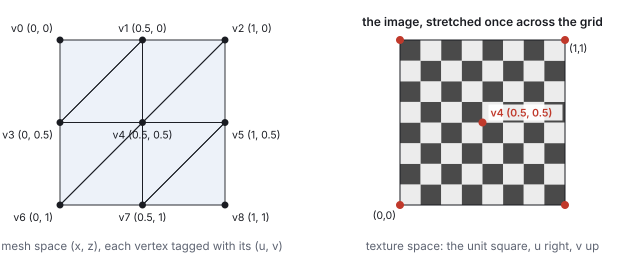
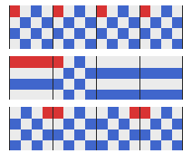
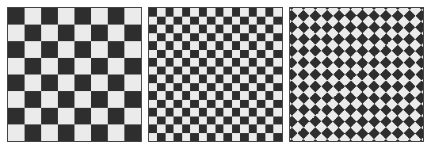
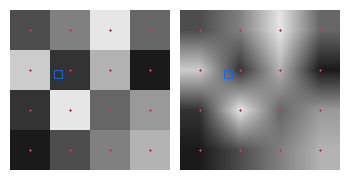
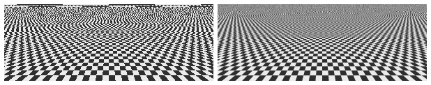
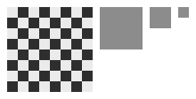
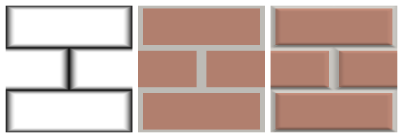
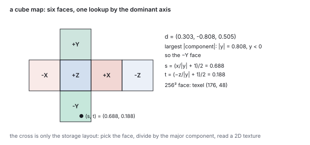
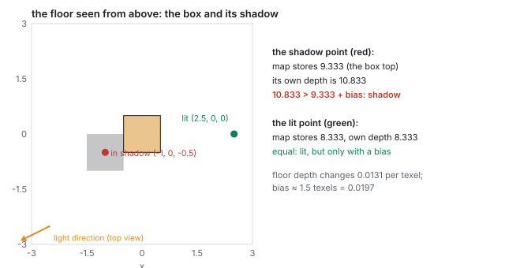
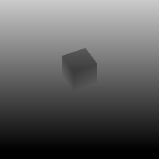

This chapter links to the course’s interactive demos and uses MathJax for its
formulas. Read it through the course website (or download the file and open it in a
browser); a Canvas inline preview will reach neither the demos nor the math.
All chapters.
Texture Mapping: Coordinates, Placement, Sampling
CSS 551 · Advanced 3D Computer Graphics · course text
Course text · how an image is attached to a surface through per-vertex coordinates, moved with a \(3\times3\) matrix, read back through a filter, precomputed into a mipmap, synthesized from a formula, and used to fake relief. Assigned by your offering’s course site; pairs with the texture mapping lecture and the uv-placement and bump-map demos.
A brick wall is geometrically a rectangle. Its bricks, mortar and chips are color, not shape, and modeling them as triangles would spend millions of them on a flat picture. Texture mapping separates the two: the surface keeps its few triangles and takes its appearance from a two-dimensional image through one new per-vertex attribute, a coordinate into that image. Everything else in the chapter is an operation on that coordinate. It is interpolated by the rasterizer like any attribute, transformed by a \(3\times3\) affine matrix to place the image (the homogeneous machinery of the affine chapter, one dimension down), and finally turned into a color by a sampler that must handle both a texel spread over many pixels and many texels crowded into one. The chapter works every step on the \(2\times2\) grid of the meshes chapter and the \(8\times8\) checkerboard of the uv-placement demo, including both of the demo’s placement matrices to the last digit, a bilinear sample by hand, the mip level a pixel selects from its derivatives, the mip pyramid of the checker, a block-compressed texel, the tangent frame of one triangle, and a bump-mapped normal. Two further uses of the machinery close it: a cube map read by direction, and a shadow map, a texture of depths compared rather than displayed.
Definition (texture, texel, texture coordinate)
A texture is a two-dimensional array of colors; one entry is a texel. The texture is
addressed by coordinates \((u, v) \in [0,1]^2\) regardless of its size in texels: \((0,0)\) is one corner,
\((1,1)\) the opposite corner, \((0.5, 0.5)\) the center, for a \(64\times64\) image and a \(4096\times4096\)
one alike. A texture coordinate is a \((u, v)\) stored on a vertex, next to its position and
normal, saying which point of the image is glued to that vertex.
Which corner is \((0, 0)\), bottom-left or top-left, is an API convention (OpenGL and three.js put
\(v = 0\) at the bottom of the image; Direct3D and Unity at the top), and a flipped texture is the usual
first symptom of mixing them. The names \(s, t\) mean the same as \(u, v\).
Only the vertices carry authored coordinates. Inside a triangle the rasterizer interpolates
\((u, v)\) with the barycentric weights of the rasterization
chapter, exactly as it interpolates color and depth, and every covered pixel receives its own
\((u, v)\). Because the interpolation is done in the projected image, it must be perspective-corrected
(Section 5 there) or the texture swims on tilted
surfaces; hardware does this for every attribute. The upshot is that three coordinates per triangle
paint the whole triangle, and the picture sticks to the surface as it moves because the coordinate
travels with the vertex.

The grid of the meshes chapter with the natural coordinates \((u, v) = (\mathrm{col}/2, \mathrm{row}/2)\), and the unit square of texture space holding the demo’s checkerboard. The image is stretched once across the grid; the center vertex lands on the center of the image.
Worked example (coordinates on the grid, and two interpolated points)
With \((u, v) = (\mathrm{col}/2, \mathrm{row}/2)\) the nine vertices get
\(\mathbf{v}_0 \mapsto (0, 0)\), \(\mathbf{v}_1 \mapsto (0.5, 0)\), \(\mathbf{v}_2 \mapsto (1, 0)\),
\(\mathbf{v}_3 \mapsto (0, 0.5)\), \(\mathbf{v}_4 \mapsto (0.5, 0.5)\), \(\mathbf{v}_5 \mapsto (1, 0.5)\),
\(\mathbf{v}_6 \mapsto (0, 1)\), \(\mathbf{v}_7 \mapsto (0.5, 1)\), \(\mathbf{v}_8 \mapsto (1, 1)\).
The midpoint of edge \((\mathbf{v}_0, \mathbf{v}_3)\) has weights \(\tfrac12, \tfrac12\), so its coordinate is
\(\tfrac12(0, 0) + \tfrac12(0, 0.5) = (0, 0.25)\): a quarter of the way up the image’s left edge, as the
point is a quarter of the way up the grid’s left edge. A point inside \(\text{tri}_0 = (0, 3, 1)\) with
barycentric weights \((0.2, 0.5, 0.3)\) gets
\(0.2\,(0,0) + 0.5\,(0, 0.5) + 0.3\,(0.5, 0) = (0.15, 0.25)\).
The assignment is a choice. Spreading the image once across the grid is the natural default; mapping
the whole image onto one quad, or the range \([0, 2]\) across the grid to repeat it, or an
artist-painted unwrap of a character are all the same mechanism with different numbers. Section 4
shows that the common choices need not be authored at all: they are a matrix applied to the default.
2 · Where coordinates come from: projections and unwrapping
The grid’s coordinates were a formula. A general mesh needs a map from its surface to the
unit square, and there are three ways to get one: project the surface onto a simple shape, cut it
open and flatten it, or paint it by hand in a modeling tool. The projections are formulas on the
position.
Definition (planar, cylindrical, spherical projection)
For a point \(\mathbf{p} = (x, y, z)\) with \(r = |\mathbf{p}|\), \(\theta = \mathrm{atan2}(z, x)\) the
longitude and \(\phi = \arcsin(y/r)\) the latitude:
planar onto the ground, \((u, v) = (x, z) + \mathbf{c}\) for an offset \(\mathbf{c}\);
cylindrical, \((u, v) = (\theta / 2\pi, y) + \mathbf{c}\);
spherical, \((u, v) = (\theta / 2\pi,\; \phi/\pi) + (0, \tfrac12)\).
Each is applied per vertex, with \(u\) wrapped into \([0, 1)\).
Worked example (one point three ways)
\(\mathbf{p} = (0.5, 0.7, 0.3)\), \(r = 0.911\), \(\theta = \mathrm{atan2}(0.3, 0.5) = 31.0^\circ\),
\(\phi = \arcsin(0.7/0.911) = 50.2^\circ\). Planar with \(\mathbf{c} = (0.5, 0.5)\): \((1.0, 0.8)\), at the
right edge of the square. Cylindrical with \(v = y + 0.5\): \((0.086, 1.2)\), off the top of the
square because the point is above the cylinder’s unit height; a real projection scales \(y\) to
the model’s extent first. Spherical: \((31/360, 0.5 + 50.2/180) = (0.086, 0.779)\). The library’s
model loader assigns spherical coordinates to the bunny and teapot this way (its
sphericalUV), which is why the checker in the demo seams and pinches on them.
The seam is unavoidable in any projection that wraps. Two vertices at \((0.999, 0, 0.01)\) and
\((0.999, 0, -0.01)\) are a fiftieth of a unit apart in space and get \(u = 0.0016\) and
\(u = 0.9984\): a triangle spanning them is told to stretch the whole texture across its width, the
streak visible on every spherically mapped model at \(\theta = 0\). The fix is to duplicate the
vertices along the seam with \(u\) on each side, the same split of the
meshes chapter’s hard edges. The poles pinch for the same reason a map of the Earth
stretches Antarctica: a whole ring of texels lands on one vertex.
Unwrapping cuts the mesh along chosen seams into charts that can be flattened with little
stretch, and packs the charts into one image, the atlas. The flattening minimizes a
distortion measure (angle-preserving, area-preserving, or a mix: Least Squares Conformal Maps,
Lévy and others 2002, is the common one); the seams are placed where they will not be seen.
An atlas of 16 charts of \(256^2\) in a \(1024^2\) image needs a gutter between charts, because the
bilinear filter of Section 5 reads neighbors and the mipmaps of Section 6 average across chart
borders: with a 4-texel gutter each chart keeps \(248/256 = 96.9\,\%\) of its area, and the gutter
survives two mip levels (\(\log_2 4\)); at level 3 and beyond the charts bleed into each other, one
of the reasons atlases limit their mip depth or store each chart’s border color in the gutter.
3 · Outside the unit square: wrap modes
Nothing keeps a coordinate in \([0, 1]\); tiling produces coordinates above 1 on purpose. What the
sampler returns outside the square is the texture’s wrap mode, set per axis:
mode
rule
\(u = 1.3\)
\(u = -0.2\)
use
repeat
\(u - \lfloor u \rfloor\), the fractional part
0.3
0.8
tiles; the demo
clamp
\(\min(\max(u, 0), 1)\)
1.0
0
decals, gradients; the border smears outward
mirror
reflect every other period
0.7
0.2
tiles whose seam would show

One \(4\times4\) texture, one red texel at its top-left, read for \(u\) from \(-1\) to \(3\) (the black ticks mark whole numbers) under repeat, clamp and mirror. Under repeat the red texel recurs every period; under clamp only the two edge columns exist outside \([0,1]\); under mirror adjacent periods share their edge, so the red texels touch in pairs.
Under repeat, \(u = 1.3\), \(u = 0.3\) and \(u = 2.3\) read the same texel, which is what makes a
coordinate range of \([0, 2]\) show the image twice. The negative case follows the same floor:
\(-0.2 - \lfloor -0.2 \rfloor = -0.2 + 1 = 0.8\), wrapping in from the far side.
4 · Placement is a \(3\times3\) affine transform
To slide, spin or tile the image on the surface, nobody edits the vertices. The authored coordinates
stay, and a transform is applied to \((u, v)\) before the lookup. A translation of the coordinate
slides the image; a rotation spins it; a scale by \(k\) makes the coordinates run to \(k\) across the
surface, so with repeat wrap the image appears \(k\) times: tile \(= k\). All three together are
an affine map of the plane, and the affine chapter’s
homogeneous trick makes it one matrix: write \((u, v)\) as \((u, v, 1)\) and multiply by
\[
M = \begin{pmatrix} a & b & t_u \\ c & d & t_v \\ 0 & 0 & 1 \end{pmatrix},
\]
a \(2\times2\) linear block, a translation column, and the row \((0, 0, 1)\). It is the \(4\times4\) of the
3D chapters one size smaller, with the same composition rules.
A bare rotation or scale acts about the origin, which in texture space is the image’s corner; a
rotated image would swing off the surface. The fix is the pivot
sandwich with the pivot at the image center \(\mathbf{c} = (0.5, 0.5)\). The course library’s
uvMat3 builds, and three.js’s texture matrix pins element for element,
\[
M = T(\mathbf{o})\; T(\mathbf{c})\; S(k, k)\; R(\theta)\; T(-\mathbf{c}),
\]
read right to left on the coordinate: move the center to the origin, rotate, scale, move it back, then
translate by the offset \(\mathbf{o} = (o_u, o_v)\). Multiplied out, the linear block is \(A = S R\) and the
translation column is \(\mathbf{o} + \mathbf{c} - A\mathbf{c}\): whatever the rotation and scale did to the
center is undone, so the center stays put and the image spins and tiles in place.
Worked example (the demo’s default matrix)
Offsets 0, rotation 0, tile 2. Then \(A = 2I\) and the translation is
\(\mathbf{c} - 2\mathbf{c} = (-0.5, -0.5)\):
\[
M_{\text{default}} = \begin{pmatrix} 2 & 0 & -0.5 \\ 0 & 2 & -0.5 \\ 0 & 0 & 1 \end{pmatrix}.
\]
The 2 on the diagonal is the tile factor; the \(-0.5\) in the last column is the center correction.
Check on two vertices: the center \(\mathbf{v}_4 = (0.5, 0.5) \mapsto (1 - 0.5, 1 - 0.5) = (0.5, 0.5)\),
fixed; the corner \(\mathbf{v}_8 = (1, 1) \mapsto (2 - 0.5, 2 - 0.5) = (1.5, 1.5)\). The transformed
coordinates span \([-0.5, 1.5]\), a range of 2 centered on 0.5: with repeat wrap, two copies of the checker
on each axis, centered on the surface.
Worked example (offset, rotation and tile together)
\(o_u = 0.25\), \(o_v = 0\), \(\theta = 45^\circ\), tile 2, with \(\cos 45^\circ = \sin 45^\circ = 0.7071\).
The linear block is the tile factor times three.js’s UV rotation matrix,
\(A = 2\begin{pmatrix} 0.7071 & 0.7071 \\ -0.7071 & 0.7071 \end{pmatrix}
= \begin{pmatrix} 1.4142 & 1.4142 \\ -1.4142 & 1.4142 \end{pmatrix}\).
Then \(A\mathbf{c} = (1.4142\cdot0.5 + 1.4142\cdot0.5,\; -1.4142\cdot0.5 + 1.4142\cdot0.5) = (1.4142, 0)\),
the center correction is \(\mathbf{c} - A\mathbf{c} = (0.5 - 1.4142, 0.5 - 0) = (-0.9142, 0.5)\), and adding
the offset gives the translation column \((-0.9142 + 0.25, 0.5) = (-0.6642, 0.5)\):
\[
M = \begin{pmatrix} 1.41 & 1.41 & -0.66 \\ -1.41 & 1.41 & 0.50 \\ 0 & 0 & 1 \end{pmatrix},
\]
the nine numbers the demo’s panel prints at those settings. Every cell is accounted for: the block
carries the rotation and the tile at once, the last column carries the center correction with the
offset folded into its \(u\) entry. Two checks: the center \(\mathbf{v}_4 \mapsto (1.4142 - 0.6642,\; 0 + 0.5)
= (0.75, 0.5)\), the center moved by exactly the offset and nothing else; the corner
\(\mathbf{v}_8 = (1, 1) \mapsto (2.8284 - 0.6642,\; 0 + 0.5) = (2.164, 0.5)\), which repeat wrap reads at
\((0.164, 0.5)\).

The checker on a quad under the identity, the default matrix (tile 2), and the offset-rotate-tile matrix, computed by pushing each pixel’s \((u, v)\) through the matrix and repeat wrap, then reading the checker. The middle panel is the demo’s starting state.
See it livePlace a texture:
the \(8\times8\) checker on a quad, with offset, rotation and tile sliders driving the texture matrix
straight from uvMat3, and the resulting \(3\times3\) printed live. Set offset 0.25, rotation
45 and tile 2 to see the second worked matrix.
The matrix multiplies each pixel’s interpolated coordinate in the fragment shader, so placement
costs nothing at the geometry level and can animate freely (a scrolling conveyor belt, flowing water).
The classroom reference code does the same arithmetic in a loop on the CPU, scaling and offsetting the
saved authored coordinates about the corner and writing them back each frame; the matrix is that loop
with the rotation and the center pivot added.
5 · Sampling under magnification: nearest and bilinear
After placement each pixel holds a continuous \((u, v)\), and the texture is a discrete grid. The sampler
must reconstruct a color from the grid, and the two regimes are opposite problems. Under
magnification the texture is drawn larger than its native size, one texel covers many pixels,
and the question is what color to give the pixels between texel centers. Under minification
(Section 6) one pixel covers many texels.
Definition (nearest and bilinear filtering)
For an \(n\times n\) texture, the coordinate \((u, v)\) lands at texel-space position
\((x, y) = (un - \tfrac12,\; vn - \tfrac12)\), so that texel centers sit at integers. Nearest
filtering returns the texel \(( \lfloor un \rfloor, \lfloor vn \rfloor)\). Bilinear filtering takes
\(i = \lfloor x \rfloor\), \(j = \lfloor y \rfloor\), the fractions \(f_x = x - i\), \(f_y = y - j\), and blends the
four texels around the point:
\[
T(u, v) = (1 - f_y)\bigl[(1 - f_x)\,T_{i,j} + f_x\,T_{i+1,j}\bigr] + f_y\bigl[(1 - f_x)\,T_{i,j+1} + f_x\,T_{i+1,j+1}\bigr].
\]
Worked example (one bilinear sample)
A \(4\times4\) grayscale texture, rows from \(v = 0\) upward:
\(T = \begin{pmatrix} 0.1 & 0.3 & 0.5 & 0.7 \\ 0.2 & 0.9 & 0.4 & 0.6 \\ 0.8 & 0.2 & 0.7 & 0.1 \\ 0.3 & 0.5 & 0.9 & 0.4 \end{pmatrix}\)
(row \(j\), column \(i\)). Sample \((u, v) = (0.3, 0.6)\). Texel-space position
\((0.3\cdot4 - 0.5,\; 0.6\cdot4 - 0.5) = (0.7, 1.9)\); \(i = 0\), \(j = 1\), \(f_x = 0.7\), \(f_y = 0.9\). The
four texels are \(T_{0,1} = 0.2\), \(T_{1,1} = 0.9\), \(T_{0,2} = 0.8\), \(T_{1,2} = 0.2\). Row \(j = 1\):
\(0.3\cdot0.2 + 0.7\cdot0.9 = 0.69\). Row \(j = 2\): \(0.3\cdot0.8 + 0.7\cdot0.2 = 0.38\). Blend the rows:
\(0.1\cdot0.69 + 0.9\cdot0.38 = 0.411\). The weights on the four texels are
\((0.03, 0.07, 0.27, 0.63)\), summing to 1; the sample sits nearest \(T_{1,2}\), which gets 0.63 of the
vote. Nearest filtering would return \(T_{\lfloor1.2\rfloor, \lfloor2.4\rfloor} = T_{1,2} = 0.2\), half the
bilinear value, because the sample is only just inside that texel’s cell.

The texture of the worked example magnified \(40\times\) with nearest (left) and bilinear (right) filtering; red crosses are texel centers, the blue square is the sample \((0.3, 0.6)\). Bilinear interpolation is exact at the centers and linear along each row and column between them.
Nearest is right for pixel art and for the demo’s checker, where the crisp squares are the point;
bilinear is right for photographs, where blocks are wrong and soft edges are invisible. Both are one
setting on the texture and independent of the placement matrix. Bilinear reads four texels for every
pixel; hardware does this in dedicated units, and it is the cheapest of the filters in Section 6.
6 · Minification, aliasing, and mipmaps
When a textured surface recedes, one pixel’s footprint on the texture grows until it covers many
texels. Reading one of them per pixel, nearest or bilinear, returns whichever texel the pixel center
happens to hit, and a hair of motion changes which. The far part of a tiled checker turns into shimmering
noise: it is the aliasing of the rasterization chapter and of
the image-space chapter, a signal sampled below its frequency. The correct
color is the average of every texel under the footprint, and the figure’s right panel computes it the
slow way, with sixteen samples per pixel.

The checker tiled six times on a plane receding toward the horizon. Left, one sample per pixel: the far region aliases into moiré. Right, sixteen samples per pixel averaged: the far region blends to gray, which is what a checker averaged over many texels is.
Averaging hundreds of texels per pixel, every pixel, every frame, is too slow; the fix is to average
once, in advance, at every scale. A mipmap (Lance Williams, 1983; mip from
multum in parvo, much in little) stores the texture together with a pyramid of half-size copies,
each texel of level \(k+1\) the mean of a \(2\times2\) block of level \(k\). At draw time the sampler
estimates the footprint’s size in texels from the screen-space derivatives of \((u, v)\), picks the
level whose texels are about a pixel wide, and reads one bilinear sample there; that sample already is
the average of the \(2^k\times2^k\) original texels underneath.

The demo’s \(8\times8\) checker and its mip pyramid, \(4\times4\), \(2\times2\), \(1\times1\). Every check is one texel wide, so every \(2\times2\) block averages to the same gray, \((0.92 + 0.18)/2 = 0.55\), and levels 1 to 3 are uniform. A distant checker is gray; the mipmap knows it in advance.
Worked example (memory)
The pyramid of the \(8\times8\) checker holds \(64 + 16 + 4 + 1 = 85\) texels, \(85/64 = 1.328\) times the
base. For a large texture the sum \(1 + \tfrac14 + \tfrac1{16} + \cdots\) tends to \(\tfrac43\): a mipmap costs
one third more memory than the texture alone, for a lookup that never aliases under minification.
Two refinements. Trilinear filtering blends bilinear samples from the two levels bracketing the
footprint size, so the seam where the sampler switches level does not show as a visible band across the
floor. Anisotropic filtering handles a footprint that is long and thin (a floor seen at a grazing
angle covers many texels along the view direction and few across it) by taking several samples along
the long axis instead of blurring both axes to the long one; without it a mipmapped floor goes blurry
in the distance. The demo uses nearest filtering with no mipmap on purpose, so the aliasing stays visible
as a teaching artifact.
Choosing the level: screen-space derivatives
The sampler picks the level from how far \((u, v)\) moves between adjacent pixels. The fragment
shader runs on \(2\times2\) blocks precisely so that these derivatives are available: with
\(\partial(u,v)/\partial x\) and \(\partial(u,v)/\partial y\) in texels,
\[
\lambda = \log_2 \max\bigl(|\partial(u,v)/\partial x|,\; |\partial(u,v)/\partial y|\bigr),
\]
and the level is \(\lambda\) rounded, or the two levels around it blended (trilinear). A negative
\(\lambda\) means magnification and level 0.
Worked example (four rows of the receding plane)
On the plane of the figure, tiled so that there are 12 texels per world unit, the center column
at four rows from near to far:
row
depth
\(\partial(u,v)/\partial x\) (texels)
\(\partial(u,v)/\partial y\)
footprint
\(\lambda\)
level
100 (near)
1.19
\((0.11, 0)\)
\((0, -0.14)\)
\(0.11\times0.14\)
\(-2.85\)
0, magnified
60
1.96
\((0.19, 0)\)
\((0, -0.37)\)
\(0.19\times0.37\)
\(-1.43\)
0
30
3.77
\((0.36, 0)\)
\((0, -1.35)\)
\(0.36\times1.35\)
\(0.43\)
0
10 (far)
9.82
\((0.94, 0)\)
\((0, -8.77)\)
\(0.94\times8.77\)
\(3.13\)
3
At the far row a pixel spans one texel across the plane and nearly nine along it. Taking the
longer axis, as the formula does, picks level 3 (texels eight times larger), which is right along
the plane and blurs across it eight-fold; taking the shorter axis would pick level 0, sharp
across and aliased along. Neither is correct, which is the anisotropic case.
Anisotropic filtering resolves it by taking several samples from the level chosen for the
short axis, spaced along the long axis: at the far row, the ratio is \(8.77/0.94 = 9.3\), so ten
taps at level 0 along the direction of the plane, averaged. Hardware caps the count (16 is the
usual maximum) and falls back to a blurrier level beyond it. On the demo’s receding checker
this is the difference between a sharp floor to the horizon and one that goes gray after a few
units.
7 · Texture compression
A \(4096^2\) texture in 8-bit RGB is 50 MB, its mipmap 67, and a scene has hundreds. Textures are
stored compressed in a form the GPU decodes per fetch, which rules out image codecs (JPEG needs
the whole block chain) and leads to fixed-rate block compression: every \(4\times4\) block
of texels becomes the same number of bits, so a texel’s address is computable.
Definition (BC1, also S3TC or DXT1)
A \(4\times4\) block is stored as two 16-bit endpoint colors (5 bits red, 6 green, 5 blue) and
sixteen 2-bit indices: 64 bits for 16 texels, 4 bits per texel, a fixed 6:1 against 24-bit RGB.
The decoder rebuilds a four-entry palette, the two endpoints and the two points a third of the way
between them, and each texel takes the palette entry its index names. Every color in the block
therefore lies on one line segment in RGB space.
A gradient block and its BC1 reconstruction from two endpoints and a 4-color palette. The RMS error is 8.1 of 255, the worst texel 20.
Worked example (one block)
The block’s darkest texel \((51, 102, 179)\) and brightest \((166, 117, 140)\) are quantized to
5-6-5 as \((6, 25, 22)\) and \((20, 29, 17)\) and decode to \((49, 101, 181)\) and \((165, 117, 140)\).
The palette adds \((88, 106, 167)\) and \((126, 112, 154)\). The sixteen texels map to indices
\(0,0,2,2,\; 2,2,2,3,\; 2,3,3,3,\; 3,3,1,1\), each the nearest palette entry; the reconstruction’s
RMS error is 8.1 and its worst texel is 20 levels off. A production encoder searches for the
endpoints that minimize the error rather than taking the extremes, and gets under 5. A block
containing a sharp red-to-green edge fares worse, because its colors do not lie near any one line.
The family grew as the need did: BC3 adds a separately compressed alpha channel (8 bits per
texel), BC5 stores two channels for normal maps (Section 9), BC6H stores HDR, and BC7 spends 8
bits per texel on several partition shapes and reaches near-lossless quality. Mobile GPUs use ETC2
and ASTC, the latter with block sizes from \(4\times4\) to \(12\times12\) for rates from 8 down to
0.9 bits per texel. All are decoded by the sampling hardware between the memory fetch and the
filter of Sections 5 and 6, so a compressed texture is mipmapped, filtered and wrapped exactly
like an uncompressed one, at a sixth of the bandwidth.
8 · Several textures, and textures from formulas
Nothing limits a surface to one lookup. A fragment shader can sample two textures with two coordinate
sets and combine them with any arithmetic: a weighted blend \(0.2\,T_1 + 0.8\,T_2\), a product
(a detail map that darkens and lightens a base color), a blend by a third texture used as a mask.
Modern materials are exactly this: a base color map, a roughness map, a normal map (Section 9), an
occlusion map, each a lookup at the pixel’s \((u, v)\), each feeding one input of the lighting.
And nothing requires the lookup to read stored texels. The sampler’s contract is a color for a
coordinate, and a function supplies that too. The demo’s checkerboard is one:
\[
\text{checker}(u, v) = \begin{cases} \text{light} & \text{if } \lfloor 8u \rfloor + \lfloor 8v \rfloor \text{ is even} \\ \text{dark} & \text{otherwise,} \end{cases}
\]
which the demo evaluates once into an \(8\times8\) texture and a shader could evaluate per pixel with
no texture at all. A procedural texture has no resolution (zoom in forever, never a block), no
memory beyond the formula, and parameters that regenerate it instantly. Regular patterns (checks,
stripes, bricks, grids) are short formulas; natural ones (marble, wood, clouds, terrain) are formulas
with a smooth pseudo-random function inside, Perlin’s noise (1985), warped and layered at several
frequencies. An arbitrary picture, a face or a logo, is easier to paint than to derive, so production
materials use both kinds. Stored textures, computed textures and the image models of
the diffusion chapter are three answers to the same question:
where does the color at \((u, v)\) come from?
9 · Bump and normal maps
A texture can also supply an input to the lighting instead of a color. Blinn’s bump map
(1978) is a grayscale height field \(h(u, v)\) over the surface; instead of displacing the geometry
(which would need vertices where the bumps are), the shading normal is tilted by the height
field’s slope, so the surface is lit as if it had the relief. The geometry stays flat; the
silhouette stays straight; the shading says otherwise.
Definition (bump-mapped normal)
In the surface’s tangent frame (\(u\) and \(v\) along the surface, the geometric normal as the
third axis), the perturbed normal is
\[
\mathbf{n}' = \mathrm{normalize}\!\left(-s\,\frac{\partial h}{\partial u},\; -s\,\frac{\partial h}{\partial v},\; 1\right),
\]
with \(s\) a scale that sets how tall the relief is taken to be. The derivatives are read from the
height texture by central differences, \(\partial h/\partial u \approx [h(u + \delta, v) - h(u - \delta, v)] / 2\delta\)
with \(\delta\) one texel. The tangent-space normal is then rotated into world space by the surface’s
tangent frame and fed to the lighting.
Worked example (one bumped normal)
A procedural brick height field, 1 on bricks and 0 in the mortar with a smooth ramp between, sampled
at \((u, v) = (0.54, 0.5)\), halfway up the left wall of a brick, with \(\delta = 1/96\). The heights
\(h(u - \delta) = 0.309\), \(h(u) = 0.5\), \(h(u + \delta) = 0.691\) give
\(\partial h/\partial u = (0.691 - 0.309)/(2/96) = 18.3\) (the ramp is steep in \(u\) units) and
\(\partial h/\partial v = 0\). With the demo’s default bump scale 1.2 and a relief of 0.02 surface units
per unit of height, \(s = 0.024\), so
\(\mathbf{n}' = \mathrm{normalize}(-0.44, 0, 1) = (-0.403, 0, 0.915)\): tilted \(24^\circ\) toward the
mortar, as the wall of a real groove faces. A light at azimuth \(55^\circ\) in the tangent plane and elevated,
\(\mathbf{L} = (0.426, 0.609, 0.669)\), gives a Lambert factor of \(\mathbf{n}\cdot\mathbf{L} = 0.669\) for the flat
normal and \(\mathbf{n}'\cdot\mathbf{L} = -0.403\cdot0.426 + 0.915\cdot0.669 = 0.440\) for the bumped one. The
groove wall facing away from the light darkens by a third; the opposite wall, whose slope has the
other sign, brightens. That pair of edges is what reads as depth.

The height field (left) and the brick wall lit with the perturbed normal at bump scale 0 (middle) and 1.2 (right), the light at azimuth \(55^\circ\). The geometry is the same two triangles in all three; only the normals fed to the lighting differ.
A normal map skips the derivative and stores the tangent-space normal itself, one
\((x, y, z)\) per texel encoded as a color (the characteristic lavender of a flat normal map is
\((0, 0, 1)\) mapped to \((0.5, 0.5, 1)\)). It is what games ship: the normals of a million-triangle
sculpt baked onto a few thousand triangles (Cohen, Olano and Manocha, 1998), so the low level of detail of
the meshes chapter keeps the high level’s shading. The limits are the
same for both: the silhouette is the low-polygon one, the bumps cast no shadows onto each other, and
at grazing angles the flat truth shows. Displacement mapping, which moves the vertices, is the honest
version and costs the geometry the trick was avoiding.
Tangent space from the coordinates
The frame in which a normal map’s vectors are expressed must be built from the mesh. Its
third axis is the vertex normal; its first two are the directions in which \(u\) and \(v\)
increase across the surface, which the texture coordinates of the triangle’s corners
determine.
Tangent and bitangent of a triangle
For a triangle with edges \(\mathbf{e}_1 = \mathbf{p}_1 - \mathbf{p}_0\), \(\mathbf{e}_2 = \mathbf{p}_2 - \mathbf{p}_0\)
and coordinate differences \((\Delta u_1, \Delta v_1)\), \((\Delta u_2, \Delta v_2)\), the vectors
\(\mathbf{T}, \mathbf{B}\) with \(\mathbf{e}_1 = \Delta u_1 \mathbf{T} + \Delta v_1 \mathbf{B}\) and
\(\mathbf{e}_2 = \Delta u_2 \mathbf{T} + \Delta v_2 \mathbf{B}\) are
\[
\mathbf{T} = \frac{\Delta v_2\,\mathbf{e}_1 - \Delta v_1\,\mathbf{e}_2}{\Delta u_1 \Delta v_2 - \Delta u_2 \Delta v_1}, \qquad
\mathbf{B} = \frac{\Delta u_1\,\mathbf{e}_2 - \Delta u_2\,\mathbf{e}_1}{\Delta u_1 \Delta v_2 - \Delta u_2 \Delta v_1}.
\]
Per vertex, \(\mathbf{T}\) is averaged over the triangles, made orthogonal to the normal, and
normalized; \(\mathbf{B}\) is recovered as \(\mathbf{N}\times\mathbf{T}\) times a handedness sign
\(\pm1\) stored as the tangent’s fourth component.
Worked example (the grid’s first triangle)
\(\text{tri}_0 = (0, 3, 1)\): \(\mathbf{e}_1 = \mathbf{v}_3 - \mathbf{v}_0 = (0, 0, 1.5)\),
\(\mathbf{e}_2 = \mathbf{v}_1 - \mathbf{v}_0 = (1.5, 0, 0)\), \((\Delta u_1, \Delta v_1) = (0, 0.5)\),
\((\Delta u_2, \Delta v_2) = (0.5, 0)\). The denominator is \(0\cdot0 - 0.5\cdot0.5 = -0.25\);
\(\mathbf{T} = (0\cdot\mathbf{e}_1 - 0.5\,\mathbf{e}_2)/(-0.25) = (3, 0, 0)\) and
\(\mathbf{B} = (0\cdot\mathbf{e}_2 - 0.5\,\mathbf{e}_1)/(-0.25) = (0, 0, 3)\): \(u\) runs along \(+x\) and
\(v\) along \(+z\), as the grid’s coordinate assignment says, and the lengths 3 mean one unit of
\(u\) spans three world units. With \(\mathbf{N} = (0, 1, 0)\), \(\mathbf{T}\times\mathbf{B} = (0, -1, 0)\)
points against \(\mathbf{N}\): the frame is left-handed, handedness \(-1\), which the shader must
know or every normal map on this surface is mirrored. A normal-map texel storing
\((0.6, 0.6, 1)\) normalized, \((0.457, 0.457, 0.762)\), encoded as the bytes \((186, 186, 225)\),
becomes the world normal \(0.457\,\hat{\mathbf{T}} + 0.457\,\hat{\mathbf{B}} + 0.762\,\mathbf{N} = (0.457, 0.762, 0.457)\).
Parallax mapping
A normal map changes the shading but not where the texture is read, so bumps do not shift as the
eye moves. Parallax mapping (Kaneko and others, 2001) offsets the coordinate by the height along the
view direction before every lookup: with the view vector \(\mathbf{V}\) in tangent space and height
\(h\) at the point, \((u, v) \leftarrow (u, v) + s\,h\,(V_x, V_y)/V_z\). At the demo’s
view, \(\mathbf{V} = (0.518, 0.207, 0.830)\), \(h = 0.3\) and \(s = 0.05\), the offset is
\((0.0094, 0.0037)\), about a texel on a \(128^2\) map, enough for a brick to appear to stand proud.
At a grazing view \(\mathbf{V} = (0.97, 0.11, 0.22)\) it is \((0.0675, 0.0075)\), seven times larger,
and the texture swims. Parallax occlusion mapping replaces the single offset by a ray march through
the height field and produces correct self-occlusion at a few dozen texture reads per pixel;
displacement mapping, which moves the vertices, remains the honest version.
See it liveBump mapping: the brick
wall of the figure on a two-triangle quad or wrapped around the teapot, with the bump scale and the
light’s azimuth as sliders. At scale 0 the wall goes flat; at any scale the quad’s edge stays
straight.
Hands-on
Build a placement matrix with all three knobs and read it back in row-major form. The library returns column-major; the last three numbers before the final 1 are the translation column.
Row-major that is \(\begin{pmatrix} 0 & 3 & -0.9 \\ -3 & 0 & 2 \\ 0 & 0 & 1 \end{pmatrix}\): the block is \(3R(90^\circ)\), and the translation is the center correction \(\mathbf{c} - A\mathbf{c} = (-1, 2)\) plus the offset \(0.1\) in \(u\). Check it on the demo with offset 0.1, rotation 90, tile 3.
Compute a mip level by hand from two coordinates one pixel apart: if a pixel reads \((u, v) = (0.500, 0.250)\) and its right neighbor \((0.508, 0.250)\) on a \(1024^2\) texture, the derivative is \(0.008 \times 1024 = 8.2\) texels and \(\lambda = \log_2 8.2 = 3.0\): level 3, the \(128^2\) copy.
In the placement demo, set tile 6 and tilt the quad away with the orbit camera until the far edge shimmers; then tile 1: the shimmer is gone because no pixel covers more than one texel. That is the minification threshold of Section 6’s table, crossed by hand.
In the bump demo, drag the light azimuth through \(180^\circ\) at bump 1.2: every groove’s bright and dark walls swap sides, which they would not do for real geometry seen from a fixed camera; the relief is shading only.
10 · Cube maps and environment mapping
A texture can be indexed by a direction instead of a surface coordinate. The standard container
is the cube map: six square images, the views from a point along \(\pm x, \pm y, \pm z\),
looked up by a 3D vector.
Definition (cube map lookup)
For a direction \(\mathbf{d}\), the face is the axis of its largest absolute component and that
component’s sign; the face coordinates are the other two components divided by the largest,
mapped from \([-1, 1]\) to \([0, 1]\) with the per-face sign conventions of the API. The lookup is
then an ordinary 2D fetch with filtering and mipmaps.

A cube map’s six faces and one lookup. The direction’s largest component is \(-y\), so the \(-Y\) face is read at the coordinates the other two components give after dividing by \(|y|\).
Worked example (one lookup)
\(\mathbf{d} = \mathrm{normalize}(0.3, -0.8, 0.5) = (0.303, -0.808, 0.505)\). The largest absolute
component is \(|y| = 0.808\) with \(y < 0\): the \(-Y\) face. With OpenGL’s convention for that
face, \(s = (x/|y| + 1)/2 = 0.688\) and \(t = (-z/|y| + 1)/2 = 0.188\), texel \((176, 48)\) on a
\(256^2\) face. Six \(512^2\) faces in 8-bit RGB are 4.7 MB, 6.3 MB with mipmaps.
Two directions are looked up in practice. The reflection vector
\(\mathbf{R} = \mathbf{d} - 2(\mathbf{d}\cdot\mathbf{N})\mathbf{N}\) of the view direction gives environment
mapping (Blinn and Newell, 1976): a mirror ball shows the room, a car paint shows the sky, at one
fetch per pixel and with the assumption that the environment is infinitely far away (so nothing
in the scene reflects in anything else). The normal itself, looked up in a cube map that
stores the environment pre-blurred by the cosine lobe, gives the irradiance for diffuse lighting,
which the illumination chapter continues; pre-blurred by a
glossy lobe at each mip level, it gives the specular term of image-based lighting. Skyboxes are the
same texture drawn on the inside of a cube around the camera. Cube maps also hold omnidirectional
shadow maps for point lights, the next section’s idea in six directions.
11 · Shadow maps: a texture of depths
The last use of a texture in this chapter stores no color at all. A shadow map (Williams,
1978) is the scene’s depth rendered from the light’s point of view; when the scene is then
rendered from the camera, each pixel’s world position is projected into the light’s view,
its depth from the light is compared with the depth the map stores at that texel, and it is in
shadow if it is farther. It is the depth buffer of the
rasterization chapter used twice, once to decide visibility from the light and once, as a
texture, to decide it again from the camera.

A box on a floor lit by a directional light, from above. The shadow point’s depth from the light exceeds what the map stores at its texel (the box top), so it is in shadow; the lit point’s equals it.

The shadow map itself: the floor’s depth from the light as a gradient, the box top as a nearer, darker patch. Every camera pixel reads one value from this image.
Worked example (two floor points)
A directional light along \((-0.667, -0.667, -0.333)\), an orthographic light camera covering a
\(6\times6\) square at \(512^2\) texels, so one texel is \(0.0117\) world units. A unit box stands on
the floor with its top center at \((0, 1, 0)\); along the light direction that point lands on the
floor at \((-1, 0, -0.5)\). At that texel the map stores the box top’s depth from the light,
\(9.333\); the floor point’s own depth is \(10.833\); \(10.833 > 9.333\), so it is in shadow, by a
margin of 1.5 units. The floor point \((2.5, 0, 0)\) has nothing above it: the map stores its own
depth \(8.333\), the comparison is \(8.333 > 8.333\), false, and it is lit. But equality is the
problem: the map is sampled at texel centers and the pixel is not at one, so the two depths differ
by rounding, and half the lit floor fails the test in a moiré of false shadow, shadow
acne. The floor slopes \(48^\circ\) to the light, so its depth changes by \(0.0131\) per texel;
a bias of about 1.5 texels, \(0.02\), added to the stored depth removes the acne. Too much bias
detaches the shadow from the box (peter-panning); a slope-scaled bias uses the local
slope, as computed here, instead of a constant.
Pitfall
The shadow map has its own resolution, and it is never the camera’s. In the example the map
covers a world unit with 85 texels; a camera at 720 rows and \(45^\circ\) looking at that floor from
5 units away covers the same unit with 174 pixels. Every shadow texel spans two screen pixels
and the shadow edge is a staircase (perspective aliasing), worse near the camera and
better far from it, the opposite of what the eye wants. Cascaded shadow maps split the view
frustum into depth ranges and give each its own map so that texel and pixel sizes stay matched;
percentage-closer filtering compares the depth at several neighboring texels and averages the
results (never the depths themselves, which have no meaning averaged), turning the staircase into
a soft edge. Both are in every engine, and both are more texture machinery: the map is sampled
with the derivatives, wrap modes and filters of this chapter.
Papers
E. Catmull, A Subdivision Algorithm for Computer Display of Curved Surfaces, PhD thesis, University
of Utah, 1974 (the first texture-mapped renderings). J. Blinn and M. Newell, “Texture and Reflection in
Computer Generated Images,” Communications of the ACM 19(10), 1976. J. Blinn, “Simulation of
Wrinkled Surfaces,” SIGGRAPH 1978 (bump mapping). L. Williams, “Pyramidal Parametrics,”
SIGGRAPH 1983 (mipmaps). K. Perlin, “An Image Synthesizer,” SIGGRAPH 1985 (noise).
P. Heckbert, “Survey of Texture Mapping,” IEEE Computer Graphics and Applications 6(11), 1986.
J. Cohen, M. Olano and D. Manocha, “Appearance-Preserving Simplification,” SIGGRAPH 1998 (normal maps).
L. Williams, “Casting Curved Shadows on Curved Surfaces,” SIGGRAPH 1978 (shadow maps). N. Greene, “Environment Mapping and Other Applications of World Projections,” IEEE CG&A 6(11), 1986 (cube maps). B. Lévy, S. Petitjean, N. Ray and J. Maillot, “Least Squares Conformal Maps for Automatic Texture Atlas Generation,” SIGGRAPH 2002. T. Kaneko and others, “Detailed Shape Representation with Parallax Mapping,” ICAT 2001.
12 · Exercises
Exercise 1 (interpolation)
On \(\text{tri}_1 = (1, 3, 4)\) of the grid, what coordinate does the point with barycentric weights \((0.5, 0.25, 0.25)\) receive? Which texel of the \(8\times8\) checker is that, and is it light or dark?
Solution
\(0.5\,(0.5, 0) + 0.25\,(0, 0.5) + 0.25\,(0.5, 0.5) = (0.375, 0.25)\). Texel \((\lfloor 3 \rfloor, \lfloor 2 \rfloor) = (3, 2)\); \(3 + 2\) is odd, so dark.
Exercise 2 (wrap)
Give the repeat, clamp and mirror results for \(u = 2.75\) and for \(u = -1.4\).
Solution
\(2.75\): repeat 0.75, clamp 1, mirror: \(2.75\) is in the period \([2, 3)\), an even one, so 0.75. \(-1.4\): repeat \(-1.4 + 2 = 0.6\); clamp 0; mirror: \([-2, -1)\) is even, so \(-1.4 + 2 = 0.6\); had it been \(-0.4\), in the odd period \([-1, 0)\), the answer would be \(0.4\).
Exercise 3 (placement)
Build the placement matrix for tile 3, no rotation, offset \((0.1, 0)\), and push \(\mathbf{v}_4\) and \(\mathbf{v}_8\) through it.
Solution
\(A = 3I\); translation \(\mathbf{o} + \mathbf{c} - 3\mathbf{c} = (0.1 - 1, -1) = (-0.9, -1)\). \(\mathbf{v}_4 \mapsto (1.5 - 0.9, 1.5 - 1) = (0.6, 0.5)\): the center moved by the offset. \(\mathbf{v}_8 \mapsto (3 - 0.9, 3 - 1) = (2.1, 2)\), read under repeat at \((0.1, 0)\).
Exercise 4 (bilinear)
With the texture of Section 5, sample \((u, v) = (0.5, 0.5)\), the image center, bilinearly.
Solution
Texel position \((1.5, 1.5)\): \(i = j = 1\), \(f_x = f_y = 0.5\). The four texels \(T_{1,1} = 0.9\), \(T_{2,1} = 0.4\), \(T_{1,2} = 0.2\), \(T_{2,2} = 0.7\) with equal weights: \((0.9 + 0.4 + 0.2 + 0.7)/4 = 0.55\). The image center is equidistant from four texel centers, so bilinear is their plain mean.
Exercise 5 (mipmaps)
A \(1024\times1024\) texture with mipmaps: how many levels, how many texels in total, and which level does a pixel whose footprint is 16 texels wide read?
Solution
Eleven levels, \(1024\) down to \(1\). Total \(\sum_{k=0}^{10} 4^k = (4^{11} - 1)/3 = 1{,}398{,}101\) texels, \(1.333\) times the base. A footprint of 16 texels needs level \(\log_2 16 = 4\), the \(64\times64\) copy, where one texel is the average of a \(16\times16\) block.
Exercise 6 (bump)
On the right wall of the same brick, \(\partial h/\partial u = -18.3\). Compute the perturbed normal and its Lambert factor under the same light.
Solution
\(\mathbf{n}' = \mathrm{normalize}(0.44, 0, 1) = (0.403, 0, 0.915)\); \(\mathbf{n}'\cdot\mathbf{L} = 0.403\cdot0.426 + 0.915\cdot0.669 = 0.784\), brighter than the flat 0.669. The two walls of one brick differ by \(0.784 - 0.440 = 0.344\) in brightness, the contrast that the eye reads as relief.
Exercise 7 (projections)
Give the spherical coordinates of \((0, 0.911, 0)\) and of \((-0.911, 0, 0)\), and say what goes wrong with each.
Solution
The first is the north pole: \(\phi = 90^\circ\), \(v = 1\), and \(\theta = \mathrm{atan2}(0, 0)\) is undefined; every \(u\) is equally right, and the pole pinches. The second has \(\theta = 180^\circ\), \(u = 0.5\), \(v = 0.5\): fine, but its neighbors at \(z = \pm\epsilon\) have \(u = 0.5 \pm \epsilon'\) with no seam, because the seam is at \(\theta = 0\), the \(+x\) axis. The library’s runtime coordinates put the seam at \(+x\) and its baked assets at \(-x\), a convention drift the code comments record.
Exercise 8 (mip selection)
A surface is viewed so that \(\partial(u,v)/\partial x = (2.5, 0)\) and \(\partial(u,v)/\partial y = (0, 0.3)\) texels. What level does trilinear filtering blend, and what does anisotropic filtering do?
Solution
\(\lambda = \log_2 2.5 = 1.32\): levels 1 and 2 blended with weights 0.68 and 0.32. The anisotropy is \(2.5/0.3 = 8.3\): nine taps at level \(\log_2 0.3 < 0\), so level 0, spread along \(x\).
Exercise 9 (compression)
How many bytes does a \(2048^2\) RGB texture with a full mip chain take uncompressed, and as BC1? How many such textures fit in 2 GB of video memory each way?
Solution
Uncompressed: \(2048^2 \times 3 \times \tfrac43 = 16.8\) MB; BC1: \(2048^2 \times 0.5 \times \tfrac43 = 2.8\) MB. In 2 GB: 119 against 714. The factor is the fixed 6.
Exercise 10 (shadow map, code)
In the shadow-map example, compute the depth stored for the floor point \((2.5, 0, 0)\) directly: the light camera is at \(-10\,\mathbf{d}\) looking at the origin. Then find a bias in world units that keeps the shadow attached to the box within 0.05 of its base.
Solution
Depth from the light is the point’s distance along \(\mathbf{d}\) from the light plane: \(\mathbf{d}\cdot(\mathbf{p} - \mathbf{l})\) with \(\mathbf{l} = (6.67, 6.67, 3.33)\); for \((2.5, 0, 0)\) that is \((-0.667)(-4.17) + (-0.667)(-6.67) + (-0.333)(-3.33) = 8.33\), the stored value. A bias \(\beta\) in depth shifts the shadow’s edge along the floor by \(\beta / \sin 48.2^\circ\) toward the box; keeping that under 0.05 needs \(\beta < 0.037\), and the acne-free minimum of 0.02 satisfies it with room to spare. Run lookAtBasis([6.67, 6.67, 3.33], [0, 0, 0], [0, 1, 0]) from the library and apply its V to the point to confirm the depth.